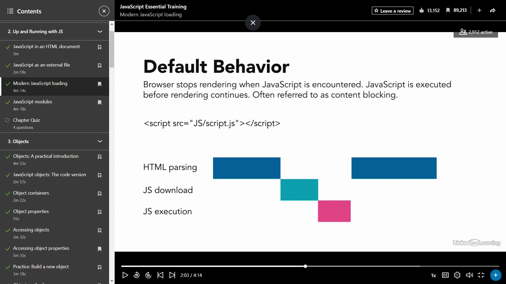
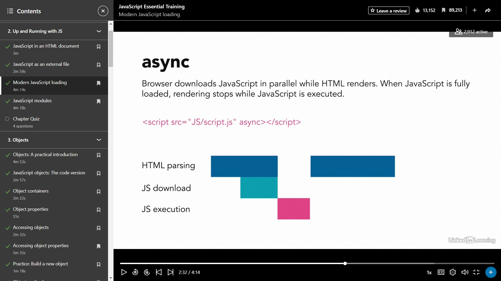
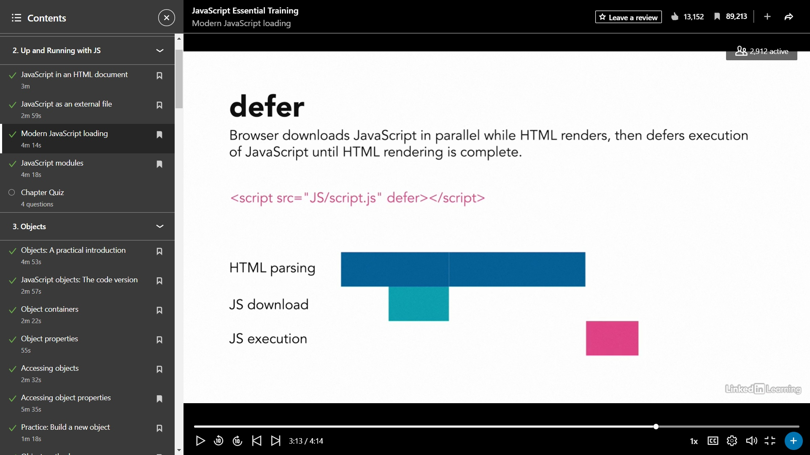

| Title: | JavaScript Essential Training |
|---|---|
| URL: | https://www.linkedin.com/learning/javascript-essential-training |
| Channel: | LinkedIn Learning |
| Instructor: | Morten Rand-Hendriksen |
| Release Date: | 2021-01-20 |
| Date Started: | 2022-11-21 |
| Date Completed: | -- |
| File Name: | EHD_VIDNOT_20221121_LL_JSEss_2021__WIP__01.md |
Tag String Links: [JavaScript]
Tag String Text: JavaScript
| Author Image: | |
| Course Thumb: | |
JavaScript is a scripting language of the web. As the web evolves from a static to a dynamic environment, technology focus is shifting from static markup and styling—frequently handled by content management systems or automated scripts—to dynamic interfaces and advanced interaction. Once seen as optional, JavaScript is now becoming an integral part of the web, infusing every layer with its script.
Through practical examples and mini-projects, this course helps you build your understanding of JavaScript piece by piece, from core principles like variables, data types, conditionals, and functions through advanced topics including loops, and DOM scripting. Along the way, instructor Morten Rand-Hendriksen provides challenges that allow you to put your new skills to the test.
0. Introduction
0.0 JavaScript: The soil from which the modern web grows
0.1 How to use the exercise files
1. JavaScript: A Brief Introduction
1.0 JavaScript: First contact
1.1 Navigating the JS landscape
1.2 Tools for working with JavaScript
1.3 Linting and formatting
1.4 Get to know the browser console
1.5 JavaScript language basics
1.6 Learning JavaScript backward
1.7 Chapter Quiz
2. Up and Running with JS
2.0 JavaScript in an HTML document
2.1 JavaScript as an external file
2.2 Modern JavaScript loading
2.3 JavaScript modules
2.4 Chapter Quiz
3. Objects
3.0 Objects: A practical introduction
3.1 JavaScript objects: The code version
3.2 Object containers
3.3 Object properties
3.4 Accessing objects
3.5 Accessing object properties
3.6 Practice: Build a new object
3.7 Object methods
3.8 Practice: Build a new method
3.9 Classes: Object blueprints
3.10 Object constructors
3.11 Practice: Build a new object with a constructor
3.12 Global objects
3.13 Challenge: Create a new object type
3.14 Solution: Create a new object type
3.15 Chapter Quiz
4. Sidebar: String Output
4.0 Mix text and variables with template literals
4.1 Traditional string output
4.2 Chapter Quiz
5. DOM
5.0 DOM: The Document Object Model
5.1 Access elements with querySelector methods
5.2 Access elements using older methods
5.3 Practice: Find an element
5.4 Modifying element classes
5.5 Attributes
5.6 Inline style
5.7 Practice: Modify classes and attributes, and styles
5.8 Add DOM elements
5.9 Challenge: Add a new element
5.10 Solution: Add a new element
5.11 Chapter Quiz
6. Sidebar: Variables and Data Types
6.0 Variables: Containers for everything
6.1 Var
6.2 Scope
6.3 Let
6.4 Const
6.5 Data types
6.6 Assignment vs. comparison
6.7 Math operators
6.8 Chapter Quiz
7. Arrays
7.0 Arrays explained
7.1 Arrays in code
7.2 Array methods
7.3 Challenge: Build and modify an array
7.4 Solution: Build and modify an array
7.5 Chapter Quiz
8. Functions and Methods
8.0 The real-world function
8.1 Functions and methods
8.2 A standard function
8.3 The arrow function
8.4 Arrow functions and "this"
8.5 Practice: Build a function
8.6 Pass data to a function with parameters
8.7 Return values from a function
8.8 Practice: Pass values between functions
8.9 Callbacks
8.10 Conditional if...else statement
8.11 Logical operators
8.12 Conditional switch statement
8.13 Looping through content
8.14 Using the map() array method
8.15 Challenge: Build an advanced function
8.16 Solution: Build an advanced function
8.17 Chapter Quiz
9. Events
9.0 DOM events explained
9.1 Typical DOM events
9.2 Event listeners
9.3 Practice: Experiment with event listeners
9.4 Advanced event listeners and "this"
9.5 Pass arguments through event listeners
9.6 Challenge: Create an event listener
9.7 Solution: Create an event listener
9.8 Chapter Quiz
10. Troubleshooting and Validating JS
10.0 Troubleshooting JavaScript in the browser
10.1 Making sense of a React component
10.2 Chapter Quiz
11. Conclusion
11.0 Next steps on your learning journey
11.1 Chapter Quiz
Modern JS & tooling
JSX & Typescript
Frameworks
We are going to start with complex and then break it down
Typical react component is long and complex
A syntax extension of JS created for the React JS framework
If I'm going to learn React should I just learn JSX?
NO! JSX is an extension, so you still need basics
If you undestand the basics you will be able to quickly pickup JSX and other JS flavors
Objects
Methods
Functions
Template Literals
Arrays
At end of course we will return to this component and you will be able to make sense of it
Overwhelmed by that all the JS flavors
Vanilla Javascript
ES2015
Babel
React
Vue.js
ECMAScript
CoffeScript
JSX
TypeScript
Angular
ES6
WebPack
Node.js
Gulp
JS is constantly evolving
Javascript: the core lang; sometimes referred to as vanilla JS
This is what we will cover in this course
ECMAScript: browser specification of the JS lang. not the lang itself, but official description of how the lang should be interpreted by browsers
Cutting edge
Babel.js: Use to convert modern JS into plain JS the browser can read
JS is an opinionated coding lang
TypeScript: variation, dialect, or flavor of JS introducing features like strong typing
Abstracted versions of JS with additional features.
.ts ext
CoffeeScript: another dialect of JS
React, Vue, Angular: JS frameworks allowing us to write JS-based font-end apps. Adds abstraction layer on top of JS
Introduce new coding convention like JSX and reliance on tools like Beble, WebPack, and Node.js
npm, WebPack, Gulp: Build tools and infrastructure to automate the process of optimizing human-readable JavaScript for the best browser performance
Node.js: JS server runtime used to run JS everywhere; used to run npm, WebPack, Babel, and more on your computer
TAKEAWAY:
Modern browser: ideally all the browsers for testing (Chrome, Firefox)
Code editor: VS Code is becoming industry standard. Highlight code as you work
Live server env: extension for VS Code or similar. Efficieny
Browser console: included with every browser
Live Server (Ritwick Dey)
npm install: node package manager goes on the internet and pulls everything into VS code to get prettier and eslint to workEX: 01_05
Script.js
Click Go Live at bottom bar of VSCode
Go to current folder 01_05
Open console
window.document
backpack hit right key for autocomplete
backpack.toggleLid(true)
backpack: lid is still set to true
EX: 01_06
/** [ENTER]:/**
* function updateBackpack()
* Outputs HTML
* @param {string} update
*/
CTRL + /: quickly comment / uncomment code
Whitespace is just for humans. #BESTPRACTICE: Use indentation to indicate visual hierarchy
Change Tab indent size by clicking Spaces:2 on VSCode bottom bar
Semicolons: JS doesn't care if semicolons or not. If anyone tells you it is wrong to do one or the other, it's not true. This is purely developer preference.
#BESTPRACTICE: Be consistent with double quotes and single quotes
#BESTPRACTICE: Use tools like Prettier and ESLint to automatically enforce that consistency
When you learn JS for the first time you typically start with the basics.
But, due to the popularity of JS frameworks like React an Vue, today the first intro many people have to JS is through advanced objects and methods.
For this reason, we'll start with objects / methods, then Data Types and DOM, finally functions, methods, events at end.
Learning JS requires understing basics and patterns, but also Finding ways to make them make sense to you
With examples first, you will see the context and then ask why questions
Open-ended practice assigments thorughout the course
Refer to MDN Web Docs as part of your process
Make documentation part of your learing journey
Documentation-based process for robust learning
What is an indicator of someone being a good JavaScript developer?
They follow standards, invest in learning, use formatting and linting tools for consistency, and write accessible code.
style tag)EX: 02_01
body tagWhy is script tag placed at bottom?
EX: 02_02
src attributeWhen you open an HTML document in the browser, the browser will read that document line by line from the top down and fetch and execute any element it encounters as necessary.
02_03
It can't do what the JavaScript is trying to do because elements don't yet exist.
The traditional solution: move script tag to end of doc so browser only encounters it when it has finished rendering the whole doc. Not really a solution though, actually a #HACK / #WORKAROUND
#GOTCHA: some JS should run at the beginning or while the doc is being loaded
New tools in JS to tightly control when and how JS is loaded: async and defer keywords



defer keyword<script scr="script.js" defer></script>
async/defer should be the standard. Only use render blocking when you have a specific reason. Loading JS in the footer is now an anti-pattern.
02_04
script.js
import backpack from "./backpack.js"
backpack is what is being imported from backpack.jsexport default backpack
export tells browser that the entity (const) can be used by any other file it is imported into
To get this work in HTML, tell browser the files are modules (auto deferred)
Modules are an advanced and new feature in modern JS. But, is standard practice with React and Vue
<!DOCTYPE html>
<html lang="en">
<head>
<meta charset="UTF-8" />
<meta http-equiv="X-UA-Compatible" content="IE=edge" />
<meta name="viewport" content="width=device-width, initial-scale=1.0" />
<title>Module Demo</title>
<script type="module" src="backpack.js"></script>
<script type="module" src="script.js"></script>
</head>
<body></body>
</html>
#GOTCHA: Can't call backpack object in console, because it is only scoped to the file, not to the browser
By default: When the script is encountered. If the script is set to "async", when the script is fully loaded. If the script is set to "defer", when the entire HTML page is rendered.
While <script src="javascript.js"></script> is technically correct, it is recommended to always async or defer your script unless you have a specific reason for the script to cause render blocking.
The browser loads the JavaScript asynchronously when it is encountered, then waits until all HTML is rendered before executing the script.
Modules enable modularization of code where individual functions, components, data objects, and other parts can be separated into individual files.